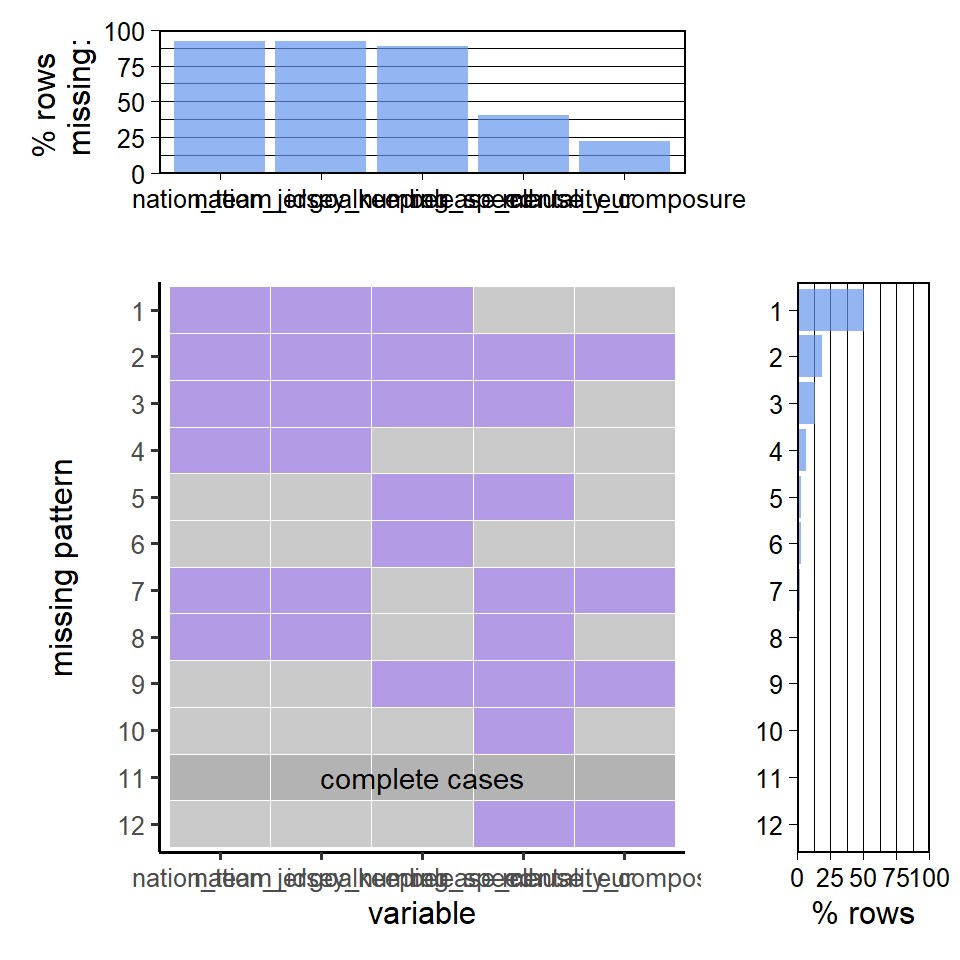

Chapter 3 Data
3.1 Sources
<<<<<<< HEAD <<<<<<< HEADThe dataset is under the form of 1 csv per year and per gender. We want to load everything, and merge them into a single dataframe.
=======The dataset is under the form of 1 csv per year and per gender. We want to load everything, and merge them into a single data.frame.
>>>>>>> b0272877face21c11ce5805705be4bacf51de0a6 =======For this project, we will be using the following FIFA datasets: https://sports-statistics.com/soccerl/fifa-2022-dataset-csvs/
Electronic Arts Website: https://www.ea.com/sports
Every year, Electronic Arts releases a new version of the FIFA video game (i.e. FIFA 21 for 2021, FIFA 22 for 2022, etc.). Every year, the attributes and statistics of current players are updated and reevaluated, which keeps the game current. The origin of the data that we are working with is the Electronic Arts company, which determines the ratings of the teams and players when they design the newest release of the game. We are collecting our data from a website called sports-statistics.com. The website is a collection of sports analysts which collect video game/sports data to post online so interested fans can analyze and extract insights from it. Specifically, our dataset was created by Thomas Nielson, a writer for the website. The author collected the data from a website called sofifa.com, which is a website that keeps track of all of the players attributes/statistics with every release of the FIFA video game. The data that we’ve collected is scraped directly off of this website with minimal preprocessing/cleaning.
We looked at other websites for collecting this type of data, such as Data World and Kaggle, however, the dataset we found contains the most complete information regarding the attributes of every player (both male and female) since 2015. The other datasets we came across also had a lot of preprocessing/cleaning applied to them.
The sports-statistics website is reliable and accurate. We performed some background research on the author of the dataset, Thomas Nielson, and found that he has published many other sports datasets on the website. We were unable to find anything negative about the dataset, the website, or the creator. We were also pleasantly surpised to find a link with which we can directly contact Thomas Nielson if we have any troubles with the dataset or find any errors.
We will now provide a brief overview of the dataset we collected.
The dataset that we are going to use is actually a collection of datasets. We have identified datasets documenting important player statistics from the FIFA video games for both male and female players in the game. Each of the datasets we collected corresponds to a single release of the FIFA video game (i.e. a particular year). We have 8 datasets for the males, ranging from 2015 through 2022. For the females, we have 7 datasets that correspond to the years 2016 through 2022 (female players were added to the game in 2016). Fortunately, each of the datasets contains the same number and type of features/variables.
Within the datasets, each row correponds to an individual player. Each dataset contains over 100 features, such as: name, position, foot preference, height, weight, wage, value, overall rating, attribute ratings (i.e. attacking, defending, speed, dribbling, goalkeeping, etc.), nationality, etc. These are the attributes that are coded into the video game, which gives the players their unique abilities within the game. Each of the attribute ratings has a max of 99 and a minimum of 1 (although no player has any attribute that is that low). Importantly, each of the players has a link to the website where these attributes were collected from, which enhances our confidence in the data.
Many of the variables within the dataset are numeric variables. For example, like mentioned before, all of the ratings are a discrete value from 1 to 99. Some of the other columns, such as the name columns and nationality columns, are categorical variables in the form of text. After concatenating all of the datasets for each of the years and for female and male players, we have 144,323 records in the dataset.
3.2 Cleaning/Transformation
In terms of cleaning and transformation, we need to first combine all of the individual datasets into one master dataset. Since all of the datasets have the same number and types of columns, we simply are using “rbind” to combine the datasets. We are combining all of the individual years of data we have, along with the male and female versions. In order to be able to differentiate between the datasets later, we add a column for the gender of the player and the year of the release.
fem_16 = read.csv('data/female_players_16.csv')
fem_16$release_year = '2016'
fem_17 = read.csv('data/female_players_17.csv')
fem_17$release_year = '2017'
fem_18 = read.csv('data/female_players_18.csv')
fem_18$release_year = '2018'
fem_19 = read.csv('data/female_players_19.csv')
fem_19$release_year = '2019'
fem_20 = read.csv('data/female_players_20.csv')
fem_20$release_year = '2020'
fem_21 = read.csv('data/female_players_21.csv')
fem_21$release_year = '2021'
fem_22 = read.csv('data/female_players_22.csv')
fem_22$release_year = '2022'
female_players = rbind(fem_16, fem_17, fem_18, fem_19, fem_20, fem_21, fem_22)male_15 = read.csv('data/players_15.csv')
male_15$release_year = '2015'
male_16 = read.csv('data/players_16.csv')
male_16$release_year = '2016'
male_17 = read.csv('data/players_17.csv')
male_17$release_year = '2017'
male_18 = read.csv('data/players_18.csv')
male_18$release_year = '2018'
male_19 = read.csv('data/players_19.csv')
male_19$release_year = '2019'
male_20 = read.csv('data/players_20.csv')
male_20$release_year = '2020'
male_21 = read.csv('data/players_21.csv')
male_21$release_year = '2021'
male_22 = read.csv('data/players_22.csv')
male_22$release_year = '2022'
male_players = rbind(male_15, male_16, male_17, male_18, male_19, male_20, male_21, male_22)female_players$gender = 'F'
male_players$gender = 'M'
all_players = rbind(female_players, male_players)
head(all_players)## sofifa_id player_url
## 1 226324 https://sofifa.com/player/226324/carli-lloyd/160002
## 2 226328 https://sofifa.com/player/226328/megan-rapinoe/160002
## 3 226334 https://sofifa.com/player/226334/abby-wambach/160002
## 4 226362 https://sofifa.com/player/226362/louisa-necib/160002
## 5 226373 https://sofifa.com/player/226373/nadine-kessler/160002
## 6 226359 https://sofifa.com/player/226359/christine-sinclair/160002
## short_name long_name player_positions overall potential
## 1 C. Lloyd Carli Anne Hollins CM, CAM, LM, ST 91 91
## 2 M. Rapinoe Megan Anna Rapinoe LM, CM 90 90
## 3 A. Wambach Abby Wambach ST 90 90
## 4 L. Nécib Louisa Nécib LM, CAM 90 90
## 5 N. Keßler Nadine Keßler CM 89 89
## 6 C. Sinclair Christine Margaret Sinclair ST, LW, RW, CAM 88 88
## value_eur wage_eur age dob height_cm weight_kg club_team_id club_name
## 1 NA NA 32 1982-07-16 173 64 NA <NA>
## 2 NA NA 29 1985-07-05 170 60 NA <NA>
## 3 NA NA 35 1980-06-02 180 81 NA <NA>
## 4 NA NA 28 1987-01-23 168 56 NA <NA>
## 5 NA NA 27 1988-04-04 169 61 NA <NA>
## 6 NA NA 32 1983-06-12 175 67 NA <NA>
## league_name league_level club_position club_jersey_number club_loaned_from
## 1 <NA> NA <NA> NA <NA>
## 2 <NA> NA <NA> NA <NA>
## 3 <NA> NA <NA> NA <NA>
## 4 <NA> NA <NA> NA <NA>
## 5 <NA> NA <NA> NA <NA>
## 6 <NA> NA <NA> NA <NA>
## club_joined club_contract_valid_until nationality_id nationality_name
## 1 <NA> NA 95 United States
## 2 <NA> NA 95 United States
## 3 <NA> NA 95 United States
## 4 <NA> NA 18 France
## 5 <NA> NA 21 Germany
## 6 <NA> NA 70 Canada
## nation_team_id nation_position nation_jersey_number preferred_foot weak_foot
## 1 113009 LCM 10 Right 3
## 2 113009 LM 15 Left 5
## 3 113009 LS 20 Right 4
## 4 113003 LM 14 Right 4
## 5 113004 SUB 8 Right 3
## 6 113000 ST 12 Right 4
## skill_moves international_reputation work_rate body_type real_face
## 1 3 5 High/High Normal (170-185) Yes
## 2 4 5 High/Medium Normal (170-) Yes
## 3 3 5 High/Medium Normal (170-185) Yes
## 4 4 5 Medium/Medium Normal (170-) Yes
## 5 4 5 High/Medium Normal (170-) Yes
## 6 3 5 High/Medium Normal (170-185) Yes
## release_clause_eur
## 1 NA
## 2 NA
## 3 NA
## 4 NA
## 5 NA
## 6 NA
## player_tags
## 1 #Dribbler, #Playmaker, #Engine, #Tactician, #Complete Midfielder
## 2 #Playmaker, #Crosser
## 3 #Aerial Threat, #Strength, #Clinical Finisher, #Complete Forward
## 4 #Dribbler, #Playmaker, #Acrobat
## 5 #Playmaker, #Tactician, #Clinical Finisher
## 6 #Playmaker, #Clinical Finisher
## player_traits pace shooting passing
## 1 75 83 83
## 2 74 74 90
## 3 72 89 65
## 4 Flair, Playmaker (AI), Technical Dribbler (AI) 84 74 87
## 5 Injury Prone, Playmaker (AI) 74 84 85
## 6 Leadership, Finesse Shot, Team Player 80 86 84
## dribbling defending physic attacking_crossing attacking_finishing
## 1 85 82 84 72 83
## 2 89 46 68 94 73
## 3 80 39 82 53 93
## 4 90 53 69 84 76
## 5 83 78 74 76 87
## 6 82 37 78 81 87
## attacking_heading_accuracy attacking_short_passing attacking_volleys
## 1 71 88 64
## 2 65 93 72
## 3 91 71 83
## 4 58 91 80
## 5 76 90 78
## 6 84 87 84
## skill_dribbling skill_curve skill_fk_accuracy skill_long_passing
## 1 86 76 80 87
## 2 92 86 78 91
## 3 82 53 59 66
## 4 90 78 81 83
## 5 84 75 72 88
## 6 82 79 74 84
## skill_ball_control movement_acceleration movement_sprint_speed
## 1 86 75 75
## 2 91 74 74
## 3 83 73 72
## 4 92 85 83
## 5 85 75 73
## 6 85 79 80
## movement_agility movement_reactions movement_balance power_shot_power
## 1 74 91 77 81
## 2 83 84 69 77
## 3 56 91 75 86
## 4 91 89 78 72
## 5 73 91 73 80
## 6 81 85 66 87
## power_jumping power_stamina power_strength power_long_shots
## 1 77 92 81 89
## 2 74 84 73 71
## 3 62 74 94 83
## 4 54 80 68 67
## 5 69 77 73 82
## 6 74 79 83 86
## mentality_aggression mentality_interceptions mentality_positioning
## 1 84 90 90
## 2 35 45 84
## 3 68 35 91
## 4 60 52 84
## 5 76 86 86
## 6 65 54 86
## mentality_vision mentality_penalties mentality_composure
## 1 86 82 NA
## 2 86 84 NA
## 3 71 86 NA
## 4 91 85 NA
## 5 88 82 NA
## 6 87 84 NA
## defending_marking_awareness defending_standing_tackle
## 1 76 86
## 2 42 44
## 3 39 28
## 4 51 56
## 5 68 82
## 6 38 17
## defending_sliding_tackle goalkeeping_diving goalkeeping_handling
## 1 79 11 5
## 2 46 13 10
## 3 27 10 10
## 4 44 11 13
## 5 77 11 15
## 6 14 15 7
## goalkeeping_kicking goalkeeping_positioning goalkeeping_reflexes
## 1 13 8 14
## 2 12 12 9
## 3 12 12 13
## 4 5 13 12
## 5 9 9 9
## 6 5 10 6
## goalkeeping_speed ls st rs lw lf cf rf rw lam cam ram lm
## 1 NA 83+3 83+3 83+3 84+3 85+3 85+3 85+3 84+3 86+3 86+3 86+3 84+3
## 2 NA 79+3 79+3 79+3 85+3 84+3 84+3 84+3 85+3 86+3 86+3 86+3 87+3
## 3 NA 87+3 87+3 87+3 78+3 83+3 83+3 83+3 78+3 79+3 79+3 79+3 77+3
## 4 NA 79+3 79+3 79+3 86+3 85+3 85+3 85+3 86+3 87+3 87+3 87+3 87+3
## 5 NA 83+3 83+3 83+3 83+3 85+3 85+3 85+3 83+3 86+3 86+3 86+3 84+3
## 6 NA 85+3 85+3 85+3 84+3 85+3 85+3 85+3 84+3 85+3 85+3 85+3 84+3
## lcm cm rcm rm lwb ldm cdm rdm rwb lb lcb cb rcb rb gk
## 1 88+3 88+3 88+3 84+3 83+3 86+3 86+3 86+3 83+3 83+3 82+3 82+3 82+3 83+3 19+3
## 2 84+3 84+3 84+3 87+3 71+3 68+3 68+3 68+3 71+3 66+3 56+3 56+3 56+3 66+3 19+3
## 3 73+3 73+3 73+3 77+3 57+3 59+3 59+3 59+3 57+3 55+3 55+3 55+3 55+3 55+3 20+3
## 4 84+3 84+3 84+3 87+3 73+3 71+3 71+3 71+3 73+3 69+3 61+3 61+3 61+3 69+3 20+3
## 5 86+3 86+3 86+3 84+3 81+3 83+3 83+3 83+3 81+3 80+3 79+3 79+3 79+3 80+3 20+3
## 6 80+3 80+3 80+3 84+3 63+3 64+3 64+3 64+3 63+3 59+3 54+3 54+3 54+3 59+3 18+3
## player_face_url club_logo_url club_flag_url
## 1 https://cdn.sofifa.com/players/226/324/16_120.png <NA> <NA>
## 2 https://cdn.sofifa.com/players/226/328/16_120.png <NA> <NA>
## 3 https://cdn.sofifa.com/players/226/334/16_120.png <NA> <NA>
## 4 https://cdn.sofifa.com/players/226/362/16_120.png <NA> <NA>
## 5 https://cdn.sofifa.com/players/226/373/16_120.png <NA> <NA>
## 6 https://cdn.sofifa.com/players/226/359/16_120.png <NA> <NA>
## nation_logo_url
## 1 https://cdn.sofifa.com/teams/113009/60.png
## 2 https://cdn.sofifa.com/teams/113009/60.png
## 3 https://cdn.sofifa.com/teams/113009/60.png
## 4 https://cdn.sofifa.com/teams/113003/60.png
## 5 https://cdn.sofifa.com/teams/113004/60.png
## 6 https://cdn.sofifa.com/teams/113000/60.png
## nation_flag_url release_year gender
## 1 https://cdn.sofifa.com/flags/us.png 2016 F
## 2 https://cdn.sofifa.com/flags/us.png 2016 F
## 3 https://cdn.sofifa.com/flags/us.png 2016 F
## 4 https://cdn.sofifa.com/flags/fr.png 2016 F
## 5 https://cdn.sofifa.com/flags/de.png 2016 F
## 6 https://cdn.sofifa.com/flags/ca.png 2016 FSome of the variables within the dataset are encoded in a way that is not conducive to our analysis. For example, since some of the players see fluctuations in their attribute ratings during the lifespan of the game, some of the ratings are encoded in a form such as: “55+3”. Thus, we must take only the first two numbers from the rating and turn it into a numeric rating, rather than a string/character rating. This occurs only in the columns that provide a rating for specific attributes of the players.
defaultW <- getOption("warn")
options(warn = -1)
clean_col=function(dataset, col){
column = dataset[, col]
str_to_num = function(x){
return(as.numeric(substr(x, 1, 2)))
}
return(sapply(column, FUN = str_to_num))
}
for (col in c("ls","st","rs","lw","lf","cf","rf","rw","lam","cam","ram","lm","lcm","cm","rcm","rm","lwb","ldm","cdm","rdm","rwb","lb","lcb","cb","rcb","rb","gk")){
#print(col)
all_players[,col]=clean_col(all_players, col)
male_players[,col]=clean_col(male_players, col)
female_players[,col]=clean_col(female_players, col)
male_22[,col]=clean_col(male_22, col)
fem_22[,col]=clean_col(fem_22, col)
}Lastly, there is some data cleaning/transformation that we will do as we go through the analysis. For example, since players often play multiple positions, their positions played are comma separated within the same cell. When we analyze characteristics of specific positions we will separate each of these positions to be included in their own unique row. Since that will cause duplication of a lot of players, we neglect to do that here and only perform the cleaning operation when it is needed within the analysis. We also will leave all of the columns of the dataset intact, rather than removing some of them now, and will use “select” to grab the ones that are necessary for our later analyses.
3.3 Missing value analysis
Let’s start by checking how many missing values are in each column.
## nation_team_id nation_jersey_number
## 133635 133635
## goalkeeping_speed release_clause_eur
## 128249 57780
## mentality_composure pace
## 32026 16074
## shooting passing
## 16074 16074
## dribbling defending
## 16074 16074
## physic league_level
## 16074 4259
## value_eur club_team_id
## 4095 3874
## club_jersey_number club_contract_valid_until
## 3874 3874
## wage_eur club_name
## 3820 2244
## league_name club_position
## 2244 2244
## club_loaned_from club_joined
## 2244 2244
## club_logo_url club_flag_url
## 2244 2244
## gk sofifa_id
## 189 0
## player_url short_name
## 0 0
## long_name player_positions
## 0 0
## overall potential
## 0 0
## age dob
## 0 0
## height_cm weight_kg
## 0 0
## nationality_id nationality_name
## 0 0
## nation_position preferred_foot
## 0 0
## weak_foot skill_moves
## 0 0
## international_reputation work_rate
## 0 0
## body_type real_face
## 0 0
## player_tags player_traits
## 0 0
## attacking_crossing attacking_finishing
## 0 0
## attacking_heading_accuracy attacking_short_passing
## 0 0
## attacking_volleys skill_dribbling
## 0 0
## skill_curve skill_fk_accuracy
## 0 0
## skill_long_passing skill_ball_control
## 0 0
## movement_acceleration movement_sprint_speed
## 0 0
## movement_agility movement_reactions
## 0 0
## movement_balance power_shot_power
## 0 0
## power_jumping power_stamina
## 0 0
## power_strength power_long_shots
## 0 0
## mentality_aggression mentality_interceptions
## 0 0
## mentality_positioning mentality_vision
## 0 0
## mentality_penalties defending_marking_awareness
## 0 0
## defending_standing_tackle defending_sliding_tackle
## 0 0
## goalkeeping_diving goalkeeping_handling
## 0 0
## goalkeeping_kicking goalkeeping_positioning
## 0 0
## goalkeeping_reflexes ls
## 0 0
## st rs
## 0 0
## lw lf
## 0 0
## cf rf
## 0 0
## rw lam
## 0 0
## cam ram
## 0 0
## lm lcm
## 0 0
## cm rcm
## 0 0
## rm lwb
## 0 0
## ldm cdm
## 0 0
## rdm rwb
## 0 0
## lb lcb
## 0 0
## cb rcb
## 0 0
## rb player_face_url
## 0 0
## nation_logo_url nation_flag_url
## 0 0
## release_year gender
## 0 0We see that we have a lot of missing values for columns such as nation_team_id, nation_jersey_number, goalkeeping_speed, etc. These are because we have players that do not play for the national team or that do not goalkeep, so they have no values for these variables. This is not a big deal, we will not be using these variables in our analysis.
We can’t visualize these missing values with a heatmap because we have too many samples (players) in our dataset. We will plot the percentage of missing values for each column that has missing values instead.
We see that we have a lot of missing values for nation_jersey_number, nation_team_id, and goalkeeping_speed. We discussed these missing values above. We also have some missing values for other attributes such as defending, dribbling, pace, etc. This is because some players are not given certain ratings, usually because they do not do those things (i.e. goalkeeping). Some of these values might also be missing because they were not attributes in the earlier years of the game. Either way, we will pay close attention to these missing values if we are going to be using these variables for our analysis.
Let’s see if there are any missing patterns in the data. We will remove columns that are missing less than 20% of their values (since it is impossible to see what is going on with so many variables).

There aren’t many patterns that emerge when looking at the missing values within our dataset. However, we can see that the most common pattern of missing values is missing the nation_team_id, nation_jersey_number, and goalkeeping_speed attributes. It makes sense that if a player does not play for the national team, then they will be missing the nation_team_id and the nation_jersey_number columns (which is also pattern 4). Most of the players in our dataset will be missing any of the attributes that are associated with being a goalkeeper, since a majority of the players are not goalkeepers and their attributes are very specific to them. We also see that we have very few complete rows within the dataset, again because almost every player has some attribute that is not assigned to them since they do not play the position or require that attribute. All in all, there are no striking patterns that emerge from the data regarding the missing values. Since the data contains a number of features that are URL’s, team/nation ids, etc., we expect there to be a large number of missing values. This is no issue, however, for our analysis because we will only be using what is required for each of our plots. We have also decided not to completely remove any column, as there is no need. We will simply be selecting the columns we want to use during our analysis of the dataset. If we were instead training a machine learning model, we obviously would have to remove the columns that would disrupt our analysis. Our goal of this section was to concatenate the datasets and preprocess the attribute ratings so that they are in a form that we can use.